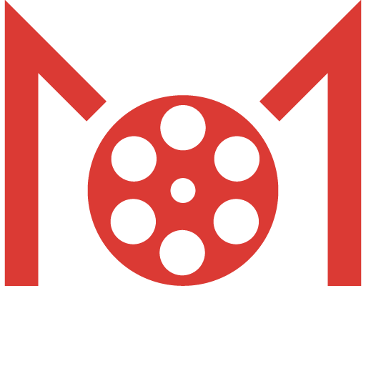

Movie Database Web Application
Project Overview
Movie Club is a dynamic movie database application that lets users browse movies based on popularity, rating, and release date with page-based navigation. The platform also allows registered users to keep track of movies they love by adding films to their favorites list using a bookmarking function.
The objective for this project was to first create a visually engaging user interface for a dynamic movie web application by crafting responsive graphic elements, assets, and visual treatments.
For the development portion of this project, I worked in a collaborative team of three to develop a functional, responsive React web application.
Tools Used
Design


Development


Role(s)
UI Designer, Front-End Web Developer
The planning portion of this project started with researching existing effective movie sites, brainstorming of layout ideas and comparing the use of effective color combinations. Upon seeing various examples for this project, I was able to obtain a sense of direction in terms of the look and feel of the design and functionalities.
After my research, I created mobile and desktop mockups of the application using Adobe Photoshop, and subsequently a working prototype using Adobe XD.
I based my design around the intention of using CSS grid for the layout focal point. I wanted to effectively design an application that was both responsive to the device it was being viewed on and visually appealing without being crowded or overwhelming to look at, as I knew the application was going to be relatively image-heavy.
Color Palette
The dark grey color choice was used to convey feeling of dark, theater-like atmosphere. Not only does using a dark color scheme bring a stylish element to the design, but using a dark interface also allows the visual content to stand out, which was an essential part of this design. Additionally, from a user experience point of view, I considered the fact that the application would likely be viewed in a dimly lit environment. The red accent color was paired with the dark grey for a contrasting and visually striking combination.
#DB3A34
#434343
#2C2C2C
Logo
The logo was created using Adobe Illustrator and is meant to resemble a film reel, to go with the theme of the movie database website.
Typography
Roboto was the sole typeface used throughout the web application, for its legibility and readability at all sizes.
Mockups
After doing some physical sketches of the web design, I created mockups of the mobile and desktop layouts using Adobe Photoshop and later created functinoal prototypes using Adobe XD.
Development Role
Using my design as the prototype, I worked in a collaborative team of three to develop a functional, responsive web application using The Movie Database (TMDB) API for fetching and displaying the movie data, and React, Sass, and GitHub for development.
Workflow
Upon our intial group meeting, we set up our React App and Sass variables, mixins, partials to ensure consistency across styling. We also set up the AppRouter and all necessary component files before dividing up and assigning the remaining tasks. We used GitHub for version control, which was an intrical part of our workflow.
Communication
As this entire project was done remotely, our team maintained regular communication via Slack as well as scheduled meetings over Zoom and Google Meet during times where we needed to work together.
This was a challenging, yet rewarding first full-on experience working with React. There are some things I might have done differently if I were to do this project again, mainly utilizing a proper project management tool to better delegate our tasks and time. I also would like to gain some more experience (and confidence) working with React after finishing the Front-End Web Developer program, as I understand it is one of the most loved and commonly used libraries among developers. But overall, I am proud of what my team was able to accomplish and I learned a lot about React and working in a development team during this project.